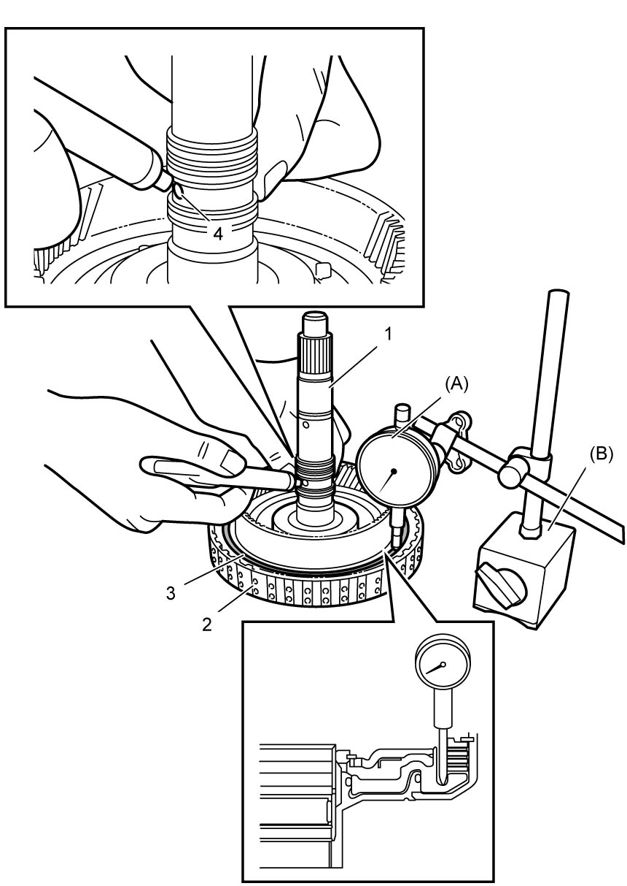

5A
| Forward Clutch Assembly Inspection |
1)Install input shaft assembly (1) to forward clutch (2).
2)Install special tools to upper surface of forward clutch retaining plate (3).
Blow in compressed air (200 kPa, 2.0 kgf/cm2, 29.0 psi) through oil hole (4) of input shaft and measure forward clutch piston stroke.
If piston stroke exceeds specified value, replace forward clutch assembly.

Blow in compressed air (200 kPa, 2.0 kgf/cm2, 29.0 psi) through oil hole (4) of input shaft and measure forward clutch piston stroke.
If piston stroke exceeds specified value, replace forward clutch assembly.
Forward clutch piston stroke
0.8 to 1.0 mm (0.032 to 0.039 in.)

 "Expand image")